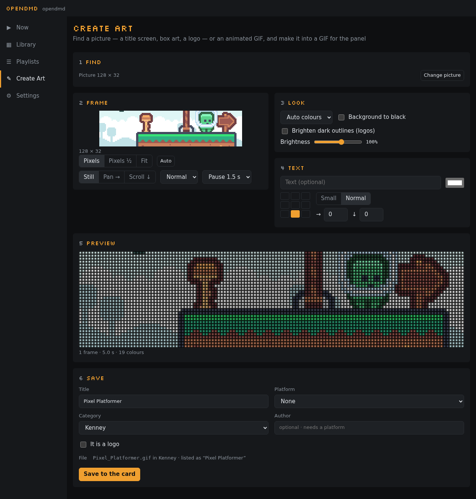

Create Art#

Create Art turns a picture or an animated GIF into art sized for the panel. Find game art on the web, use an old GeoCities GIF, or bring your own picture, then frame it, tidy it up and save it to your card. Nothing is added to the card until you save.
It works in six steps. Until you've picked something only step 1 shows; after that it folds away (Change picture opens it again) and the other steps appear.
1. Find#
Pick a source:
- Game art: choose a platform, type a game's title, and pick from its title screens, in-game shots, box art and logos.
- GifCities: search the Internet Archive's collection of GIFs from old GeoCities pages. Wide (suits the panel) shows the ones that fit the panel's long shape best.
- Your own: choose a file, or paste a web address. You can also drop a picture onto the page, or paste one you've copied.
Click a result to load it. Searching for art needs an internet connection.
2. Frame#
The panel is a wide strip, 128 by 32 dots, shown as a window over your picture. Drag the picture to choose what shows, or press Auto to let the app pick the busiest part.
- Pixels keeps the picture's own pixels, one per dot: best for game screenshots and pixel art. Enlarged screenshots are spotted and shrunk back automatically.
- Pixels ½ halves it.
- Fit shrinks a logo or photo to the panel's height.
A still picture can also slowly Pan → or Scroll ↓ across the panel.
3. Look#
Adjust colours and brightness so it reads well on LEDs. Brighten dark outlines helps black lines and lettering, which disappear on a panel because black LEDs are simply off.
4. Text#
Add a line of text in the panel's own font, in any colour, at one of nine spots. On an animation you can put it on every frame or only some.
5. Preview#
See it playing as it will look on the panel. For an animation there is a timeline of frames: trim the start and end, delete frames, change the speed, play it backwards or there-and-back (Ping-pong), and choose how many times it plays. Undo is there if you change your mind.
If the animation moves in jumpy steps, a Smooth motion switch offers to fill in the in-between frames.
6. Save#
Give it a title, a platform, a category and an author, as when adding GIFs. The app shows the name it will get and how the Library will list it. Saving puts it on your card, ready to play, and offers to add it to the playlist that's playing.
Editing a GIF you already have#
In the Library, open a GIF and choose Edit in Create Art. It loads with all its frames and details. When you save, Replace the original keeps it in every playlist it's in, or Save as new keeps both.